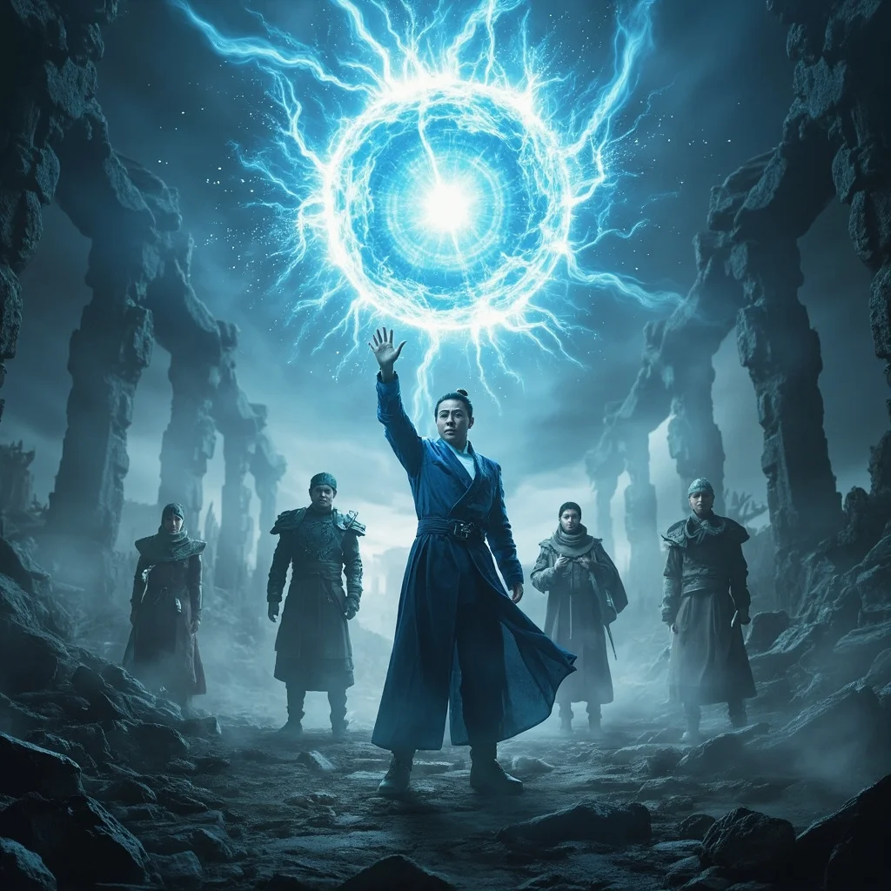

第1章：靈芯覺醒
🎧 點擊播放有聲朗讀
🎧 點擊播放有聲朗讀
「我不會死在這片廢土，我要用靈芯——修成永恆。」
荒廢的科技廢土中，年輕的主角站在夕陽下，決心踏上修煉之路。
「啟動條件符合，是否與宿主建立初級連結？」
修真與科技的融合體——靈芯系統，在虛空中浮現，引導他踏入修煉之門。
「模擬修煉完成，靈氣吸納率：0.002%，三處靈竅活化中，初步氣感產生」
「成了……我真的，踏入了修煉之路。」

林塵在實驗室中研究靈芯系統，全息投影展示著修真數據和基因圖譜。
林塵站在廢墟中高舉發光的靈芯核心，周圍的修真者們震驚地仰望。